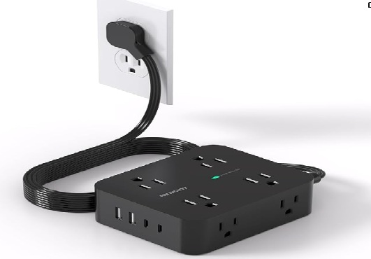
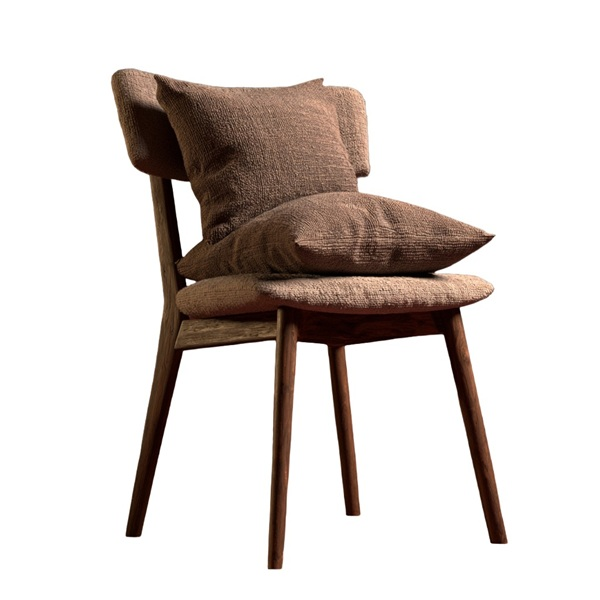

Attendance not exactly optional. If I know what is good for my. Rustic isn't really my thing and I'd prefer a Courtyard Merriot over rural resorts.
So I try to prepare with Claude Chrome extension to gather specific info.
Answers to specific questions
Is there a place to jog (run/exercise)?
The site doesn't mention jogging trails specifically, but there are hiking trails on the property,
and the nearby Dean Farm Heritage Trail (10 min away, 271 acres of trails) is free and open year-round.
Worth calling to ask if there's a marked running route on-site.
Wonder what kind of dangereous snakes I can step on
Is there an indoor gym?
No — I didn't find any mention of a fitness gym (weights/cardio equipment) anywhere on the site.
The indoor amenities are the heated pool and hot tub, plus sport courts and the ropes course outdoors.
If a gym matters to you, I'd call ahead to confirm.
And if it rains....Oh wait, there is darts, ping-pong, billiards and a mecanical bull
Is there a store for food/protein bars?
Yes — they have an on-site Mercantile Gift Shop (referred to elsewhere as the "mini mart/gift shop")
where snacks and drinks are available for purchase outside of meal times. The site doesn't specifically list protein bars,
so I'd call to confirm they stock those.
BYOPB is probably a better idea
Is there a coffee shop?
Not a dedicated one. Coffee is included at the breakfast buffet,
and the Red Dog Saloon serves drinks/light bites in the evenings, but there's no standalone café mentioned on the site.
Coffee available not before 7am and no coffeemaker in cabin or room. Does that even sound civilized? However
there is a cafe for morning and afternoon for 'fresh coffee, pastries and light snacks' Not sure why
Claude missed it. Maybe it was looking for Starbucks
The route debate
Then Claude suggested a route that was in contrast to a suggestion by Google Maps.
Here is what Claude said when I questioned Claude's suggestion:
Thought for 37s
Thought for 37s
That's a fair challenge — let me look into this rather than just defend my first answer.
Searched the web
Searched the web
You're right to push on this, and it's a good catch. Let me explain what happened and then fix the plan.
I built my first answer around the route that most "Toronto to Lake George/NYC" travel guides recommend — via Buffalo
and I‑90. That advice is really tuned for reaching NYC or the southern Adirondacks, where the interstate-heavy southern
route wins. But your destination is in the eastern Adirondack interior, reached from the north via Watertown — and
I didn't re-check that assumption against your specific endpoint. That's on me.
I am glad to see that it is not just my assumption that are sometimes incorrect
Packing notes
But yes there is WIFI and I already ordered a travel power bar since dollars to donuts
the rooms will not have enough outlets. In rustic cabins (and a lot of hotel rooms) outlets seem to
be more of an afterthought. And I usually have to create my own office chair to avoid carpal tunnel syndrome.


And if my husband is nice, I will even share it with him.